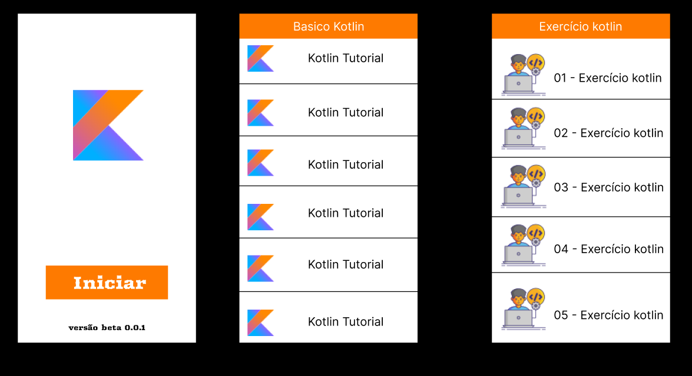

Desenvolva Suas Habilidades de Programação com Kotlin Master
O Kotlin Master é a solução perfeita para quem deseja melhorar suas habilidades de lógica de programação de maneira prática e interativa – tudo diretamente no seu celular!
Criado com Kotlin e baseado nas melhores práticas de aprendizado, o Kotlin Master oferece uma série de exercícios desafiadores de lógica, focados em aprimorar seu raciocínio lógico e suas habilidades de programação. De iniciantes a programadores avançados, temos desafios para todos os níveis.